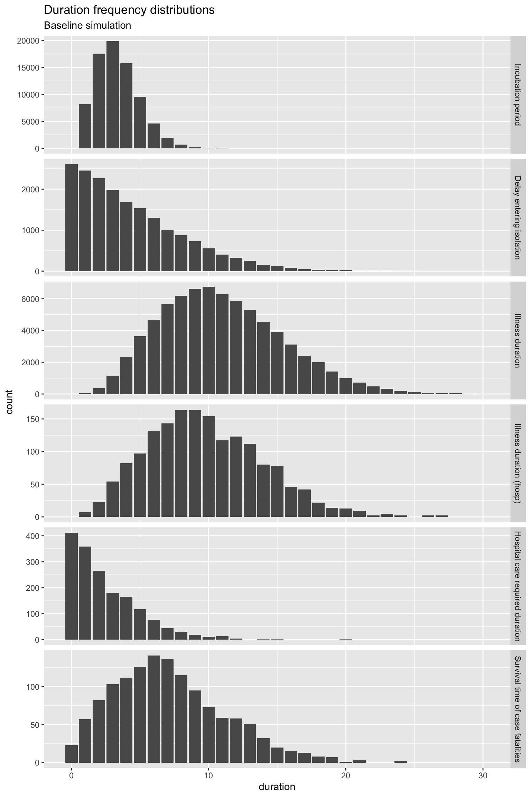
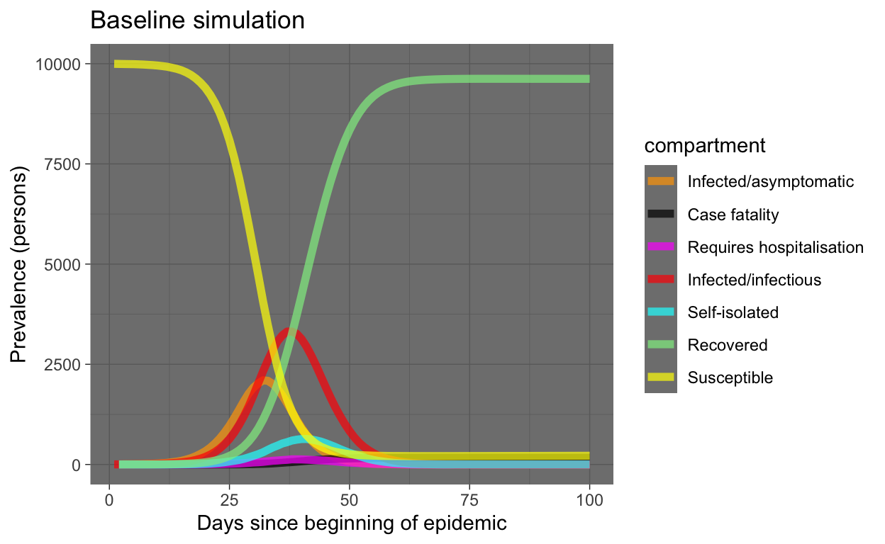
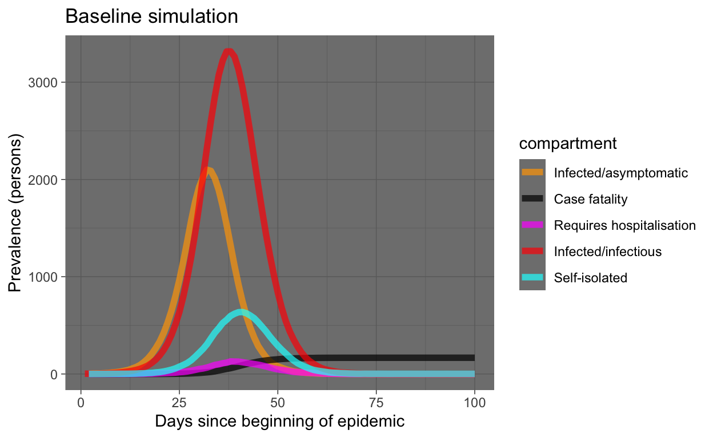
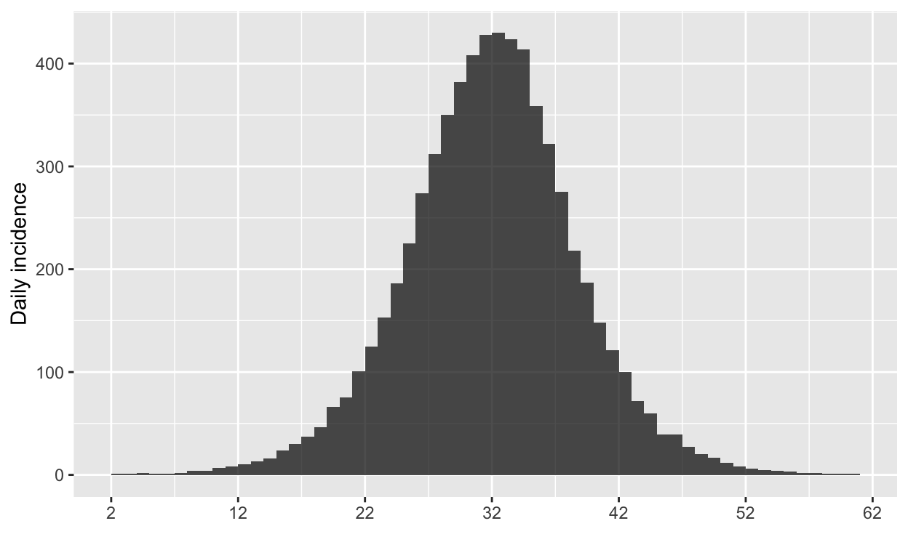
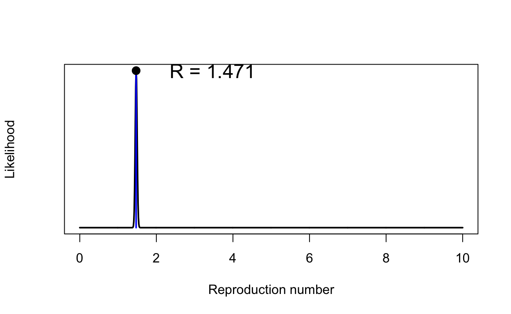
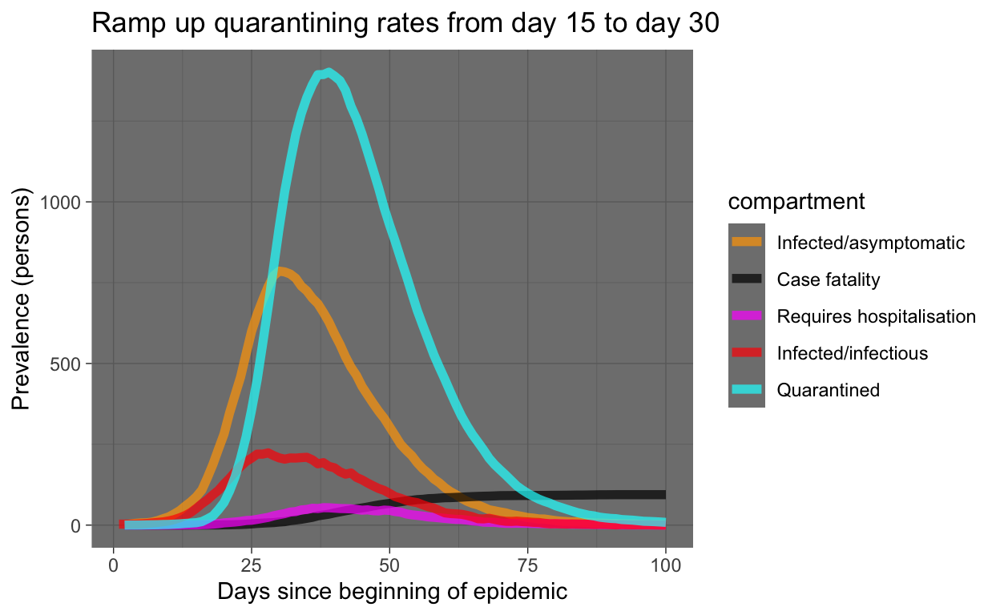
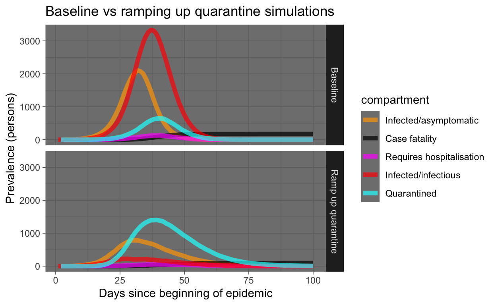
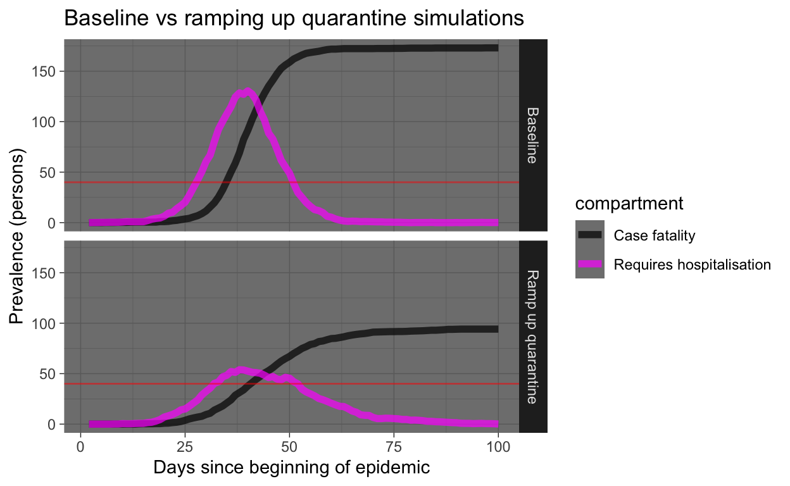
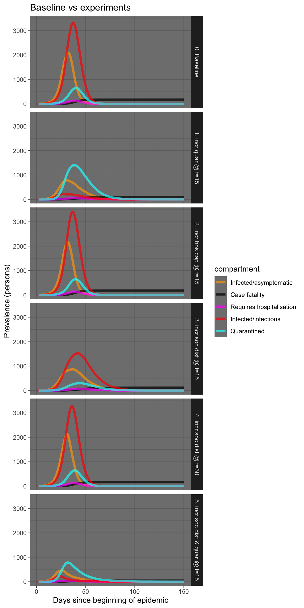
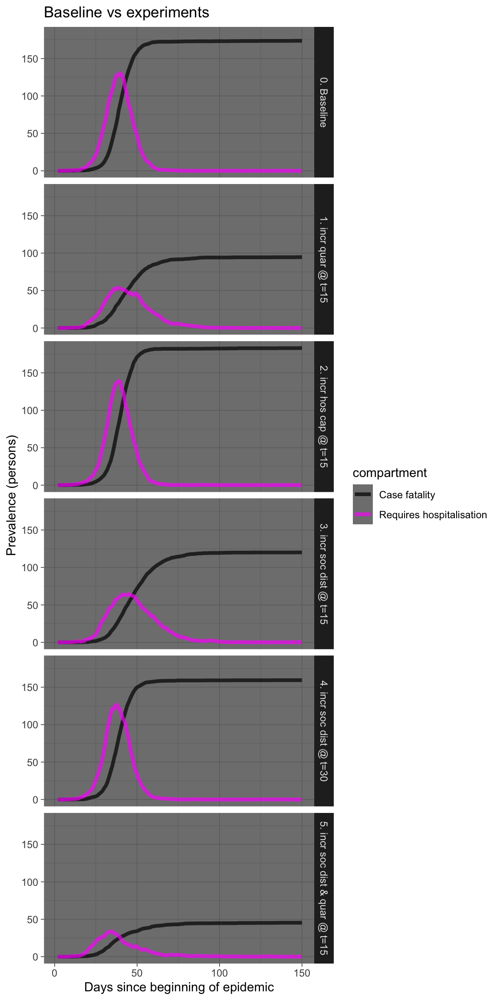

This is the second of several posts which examine the effect of various public health interventions on the local epidemic spread of COVID-19 infection using stochastic individual compartmental models (ICMs) implemented by the EpiModel library for R. In this post we extend the ICM SIR model provided by EpiModel in various ways to improve its verisimilitude and utility for COVID-19 simulation.
The simulation results in this blog post, or any other results produced by the R code described in it, should not be used as actual estimates of mortality or any other aspect of the COVID-19 pandemic. The simulations are intended to explain principles, and permit exploration of the potential effects of various combinations and timings of interventions on spread. Furthermore, the code for these simulations has been written hurriedly over just a few days, it has not yet been peer-reviewed, and is considered alpha quality, and the simulation parameterisation presented here has not yet been validated against real-world COVID-19 data.
In the previous post, which was just a week ago but seems like an eternity, I showed how to use the excellent EpiModel library to implement a simple SIR (susceptible-infectious-recovered) stochastic individual contact model (ICM) to allow the effects of various public health interventions, specifically social distancing and hygiene measures, on the spread of an infectious agent such as the COVID-19 virus to be explored. If you haven’t already, please read that post first for an explanation on how stochastic ICMs differ from dynamic disease models which rely on calculus. Essentially, ICMs are simple (but useful) micro-simulations of every individual in a population. Such a computational, rather than mathematical, approach to disease dynamics modelling allows for a lot more flexibility, as will be outlined below.
The EpiModel package is intended to be extended, and provides for drop-in replacements for the the main process functions that manage the simulations it provides. Unfortunately, the modifications needed to better model COVID-19 spread and public health interventions required modifications to some of the core EpiModel functions, thus I have forked the code on GitHub. At the time of writing, the forked package is not ready for use – I will update this post when it is – but it is still possible to use these extensions right now by monkey patching the EpiModel code.
In this post, I will show all the required code required to run your own simulations. Or you can just copy the Rmarkdown source code for this post from the repository for this blog (see link at foot of page).
First we need quite a few libraries: install these in the usual fashion (if you load the source for this document, then recent versions of RStudio should offer to install any missing libraries for you).
library(tidyverse)
library(magrittr)
library(lubridate)
library(stringr)
library(tibble)
library(broom)
library(ggplot2)
library(gt)
library(knitr)
library(devtools)
library(DiagrammeR)
library(parallel)
library(foreach)
library(tictoc)
suppressMessages(library(EpiModel))
library(incidence)
library(earlyR)
tic("Time to complete")Then we can monkey patch the EpiModel code by sourcing the extensions, either locally (adjust the path as required) or from GitHub gists.
source_files <- c("_icm.mod.init.seiqhrf.R", "_icm.mod.status.seiqhrf.R",
"_icm.mod.vital.seiqhrf.R", "_icm.control.seiqhrf.R", "_icm.utils.seiqhrf.R",
"_icm.saveout.seiqhrf.R", "_icm.icm.seiqhrf.R")
src_path <- paste0("./_posts/2020-03-18-modelling-the-effects-of-public-health-",
"interventions-on-covid-19-transmission-part-2/")
gist_url <- "https://gist.github.com/timchurches/92073d0ea75cfbd387f91f7c6e624bd7"
local_source <- FALSE
for (source_file in source_files) {
if (local_source) {
source(paste(src_path, source_file, sep = ""))
} else {
source_gist(gist_url, filename = source_file)
}
}The extensions add quite a few compartments. Note the descriptions of each compartment, which may not be exactly what you might assume. For example, the E compartment is used for individuals who have been exposed to the virus and infected with it, but aren’t yet symptomatic – that is, they are asymptomatic. That’s also the case with traditional SEIR models, but the assumption is usually that the asymptomatic infected are not infectious to others. I have relaxed that assumption in the face of mounting evidence that the COVID-19 virus is transmissible during the asymptomatic incubation period.
Similarly, the H compartment doesn’t represent those in hospital, but rather those needing hospitalisation. The assumption is that if hospital capacity were available, then people in the H compartment would be admitted to hospital. At the time of writing, it is clear that hospital capacity is likely to be exceeded in most countries due to COVID-19 morbidity, as has already occured in China and Italy. There’s a hospital capacity parameter hosp.cap that specifies the hospital capacity, and it is possible to specify elevated mortality rates for those in the H compartment needing hospitalisation but who can’t obtain such care because the total hosp.cap has been exceeded.
Related to this, the F compartment represents case fatalities – that is, deaths in COVID-19 cases due to the virus. There are also parameters for background death rates for other causes (departure rates). I thought it was important to specifically model case fatalities, and having a compartment for that was the easiest way to do that. Note also that case fatalities are assumed only to occur in those in the H compartment, that is, those requiring hospitalisation (whether they can get it or not).
| Compartment | Functional definition |
|---|---|
| S | Susceptible individuals |
| E | Exposed and infected, not yet symptomatic but potentially infectious |
| I | Infected, symptomatic and infectious |
| Q | Infectious, but (self-)quarantined |
| H | Requiring hospitalisation (would normally be hospitalised if capacity available) |
| R | Recovered, immune from further infection |
| F | Case fatality (death due to COVID-19, not other causes) |
The supported transitions between compartments are as shown in the diagram below. The letters on the transition edges denote model parameters relating to that transition in the table that follows.
We’ll define a function below called simulate() that wraps the various (extended) EpiModel simulation constructors and provides baseline defaults for the (very) many parameters. You can change the defaults in this function definition to suit your own model comparisons. The defaults were arrived at partly through heuristic estimates of disease behaviour that will be documented later, and partly through some trial-and-error tweaking. They result in a model that behaves in a way that mimics dynamic models (an assertion that will be better justified in due course).
Public health interventions can then be investigated by changing just those parameters which relate to or represent the intervention.
The main parameters of interest are as follows:
| DiagramRef | Parameter | Default | Explanation |
|---|---|---|---|
type |
SEIQHRF |
Type of model: SI, SIR, SIS, SEIR, SEIQHR and SEIQHRF available, but only SEIQHRF is likely to work in the current version of the code. |
|
nsteps |
366 |
Number of days for simulation. Note that day 1 is for initialisation, day 2 is the first day of the simulation, hence default of 366 for 1 year. |
|
nsims |
10 |
Number of simulations to run and then average. |
|
ncores |
10 |
Number of CPU cores to use for parallel execution. |
|
b |
prog.rand |
FALSE |
Method for progression from E compartment to I. If TRUE, random binomial draws at |
d,g,h |
rec.rand |
FALSE |
Method for recovery transition from I, Q or H to R. If TRUE, random binomial draws at |
f |
fat.rand |
FALSE |
Method for case fatality transition from H to F. If TRUE, random binomial draws at |
c |
quar.rand |
FALSE |
Method for quarantine transition from I to Q. If TRUE, random binomial draws at |
e,i |
hosp.rand |
FALSE |
Method for transition from I or Q to H -- that is, from infectious or from quarantined/isolated to requiring hospitalisation. If TRUE, random binomial draws at |
e,i |
disch.rand |
FALSE |
Method for transition from H to R -- that is, from requiring hospitalisation to recovered. If TRUE, random binomial draws at |
infection.FUN |
infection.seiqhrf.icm |
No, being infected with SARS-CoV2 is not fun. Rather this is the the name of the function to implement infection processes. Use the default. |
|
departures.FUN |
departures.seiqhrf.icm |
Handles background demographics, specifically departures (deaths not due to the virus, and emigration). Use the default. |
|
arrivals.FUN |
arrivals.icm |
Handles background demographics, specifically arrivals (births and immigration). Uses the original EpiModel code currently. A replacement that implements modelling the arrival of infected individuals is under development -- but for now, all arrivals go into the S compartment. |
|
get_prev.FUN |
get_prev.seiqhrf.icm |
Utility function that collects prevalence and transition time data from each run and stores it away in the simulation result object. Use the default. |
|
s.num |
9997 |
Initial number of *S compartment individuals in the simulated population. An overall population of 10,000 is a good compromise. A set of models will still take several minutes or more to run, in parallel. |
|
e.num |
0 |
Initial number of E compartment individuals in the simulated population. |
|
i.num |
3 |
Initial number of I compartment individuals in the simulated population. |
|
q.num |
0 |
Initial number of Q compartment individuals in the simulated population. |
|
h.num |
0 |
Initial number of H compartment individuals in the simulated population. |
|
r.num |
0 |
Initial number of R compartment individuals in the simulated population. |
|
f.num |
0 |
Initial number of F compartment individuals in the simulated population. |
|
x |
act.rate.i |
10 |
The number of exposure events (acts) between infectious individuals in the I compartment and susceptible individuals in the S compartment, per day. It's stochastic, so the rate is an average, some individuals may have more or less. Note that not every exposure event results in infection - that is governed by the |
x |
inf.prob.i |
0.05 |
Probability of passing on infection at each exposure event for interactions between infectious people in the I compartment and susceptibles in S. Reducing |
y |
act.rate.e |
10 |
The number of exposure events (acts) between infectious individuals in the E compartment and susceptible individuals in the S compartment, per day. Otherwise as for |
y |
inf.prob.e |
0.02 |
Probability of passing on infection at each exposure event for interactions between infectious people in the E compartment and susceptibles in S. Note the default is lower than for |
z |
act.rate.q |
2.5 |
The number of exposure events (acts) between infectious individuals in the Q compartment (quarantined, self or otherwise) and susceptible individuals in the S compartment, per day. Note the much lower rate than for the I and E compartments, reflecting the much greater degree of social isolation for someone in (self-)quarantine (often incorrectly referred to as self-isolation, but quarantine is the term of isolation of infected people). The exposure event rate is not zero for this group, just much less. Otherwise as for |
z |
inf.prob.q |
0.02 |
Probability of passing on infection at each exposure event for interactions between infectious people in the Q compartment and susceptibles in S. Note the default is lower than for |
c |
quar.rate |
1/30 |
Rate per day at which symptomatic (or tested positive), infected I compartment people enter quarantine (aka self-isolation, Q compartment). Asymptomatic E compartment people can't enter quarantine because they don't yet know they are infected. Default is a low rate reflecting low community awareness or compliance with quarantine/self-isolation requirements or practices, but this can be tweaked when exploring scenarios. |
e,i |
hosp.rate |
1/100 |
Rate per day at which symptomatic (or tested positive), infected I compartment people or quarantined Q compartment people enter the state of requiring hospital care -- that is, become serious cases. A default rate of 1% per day with an average illness duration of about 10 days means a bit less than 10% of cases will require hospitalisation, which seems about right (but can be tweaked, of course). |
g |
disch.rate |
1/15 |
Rate per day at which people needing hospitalisation recover. |
b |
prog.rate |
1/10 |
Rate per day at which people who are infected but asymptomatic (E compartment) progress to becoming symptomatic (or test-positive), the I compartment. See |
b |
prog.dist.scale |
5 |
Scale parameter for Weibull distribution for progression, see |
b |
prog.dist.shape |
1.5 |
Shape parameter for Weibull distribution for progression, see |
d |
rec.rate |
1/20 |
Rate per day at which people who are infected and symptomatic (I compartment) recover, thus entering the R compartment. See |
d |
rec.dist.scale |
35 |
Scale parameter for Weibull distribution for recovery, see |
d |
rec.dist.shape |
1.5 |
Shape parameter for Weibull distribution for recovery, see |
f |
fat.rate.base |
1/50 |
Baseline mortality rate per day for people needing hospitalisation (deaths due to the virus). See |
f |
hosp.cap |
40 |
Number of available hospital beds for the modelled population. See |
f |
fat.rate.overcap |
1/25 |
Mortality rate per day for people needing hospitalisation but who can't get into hospital due to the hospitals being full (see |
f |
fat.tcoeff |
0.5 |
Time co-efficient for increasing mortality rate as time in the H compartment increases for each individual in it. See |
vital |
TRUE |
Enables demographics, that is, arrivals and departures, to and from the simulated population. |
|
a.rate |
(10.5/365)/1000 |
Background demographic arrival rate. Currently all arrivals go into the S compartment, the default is approximately the daily birth rate for Australia. Will be extended to cover immigration in future versions. |
|
ds.rate, de.rate, de.rate, dq.rate, dh.rate, dr.rate |
various rates |
Background demographic departure (death not due to virus) rates. Defaults based on Australian crude death rates. Can be used to model emigration as well as deaths. |
|
out |
mean |
Summary function for the simulation runs. median is also available, or percentiles, see the |
Phew! That’s a lot of parameters. However, the trick is to establish a baseline model with a set of defaults (start with the ones given here, then adjust as you see fit), then modify only the ones you wish to for each intervention “experiment”.
Several of the simulation parameters can also be varied over time. That is, as well as accepting a single value, they also accept a vector of values with length equal to nsteps, the number of days over which the simulation runs. Assuming nsteps=366, we can, for example, set quar.rate = c(rep(1/10,30), rep(1/3, 335)). That defines a step function in which the transition-to-quarantine rate for the I compartment is 0.1 for the first 30 days, then steps up to 0.33 thereafter, reflecting, say, a campaign or government edict to self-quarantine. Of course, the vector of values can be a smooth function, or can go up then down again, or whatever you wish to model. This is an extremely powerful feature of computational models such as this, and one very hard to incorporate into purely mathematical models.
Most of the parameters for which time-variation is useful support it. If they don’t, you will receive an error message (the table above will be updated to include this information later).
simulate() wrapper functionHere is the definition of the simulate() function, that wraps the various simulation model constructors into one function and provides defaults (as documented above) for all their values, so that just one or two values can be over-ridden to run an “experiment” to see what effect certain interventions at certain times might have.
The function returns a list with two elements: the simulation result object, and a data frame with one row per day, with the relevant columns ready for use.
# function to set-up and run the baseline simulations
simulate <- function(# control.icm params
type = "SEIQHRF",
nsteps = 366,
nsims = 8,
ncores = 4,
prog.rand = FALSE,
rec.rand = FALSE,
fat.rand = TRUE,
quar.rand = FALSE,
hosp.rand = FALSE,
disch.rand = TRUE,
infection.FUN = infection.seiqhrf.icm,
recovery.FUN = progress.seiqhrf.icm,
departures.FUN = departures.seiqhrf.icm,
arrivals.FUN = arrivals.icm,
get_prev.FUN = get_prev.seiqhrf.icm,
# init.icm params
s.num = 9997,
e.num=0,
i.num = 3,
q.num=0,
h.num=0,
r.num = 0,
f.num = 0,
# param.icm params
inf.prob.e = 0.02,
act.rate.e = 10,
inf.prob.i = 0.05,
act.rate.i = 10,
inf.prob.q = 0.02,
act.rate.q = 2.5,
quar.rate = 1/30,
hosp.rate = 1/100,
disch.rate = 1/15,
prog.rate = 1/10,
prog.dist.scale = 5,
prog.dist.shape = 1.5,
rec.rate = 1/20,
rec.dist.scale = 35,
rec.dist.shape = 1.5,
fat.rate.base = 1/50,
hosp.cap = 40,
fat.rate.overcap = 1/25,
fat.tcoeff = 0.5,
vital = TRUE,
a.rate = (10.5/365)/1000,
a.prop.e = 0.01,
a.prop.i = 0.001,
a.prop.q = 0.01,
ds.rate = (7/365)/1000,
de.rate = (7/365)/1000,
di.rate = (7/365)/1000,
dq.rate = (7/365)/1000,
dh.rate = (20/365)/1000,
dr.rate = (7/365)/1000,
out="mean"
) {
control <- control.icm(type = type,
nsteps = nsteps,
nsims = nsims,
ncores = ncores,
prog.rand = prog.rand,
rec.rand = rec.rand,
infection.FUN = infection.FUN,
recovery.FUN = recovery.FUN,
arrivals.FUN = arrivals.FUN,
departures.FUN = departures.FUN,
get_prev.FUN = get_prev.FUN)
init <- init.icm(s.num = s.num,
e.num = e.num,
i.num = i.num,
q.num = q.num,
h.num = h.num,
r.num = r.num,
f.num = f.num)
param <- param.icm(inf.prob.e = inf.prob.e,
act.rate.e = act.rate.e,
inf.prob.i = inf.prob.i,
act.rate.i = act.rate.i,
inf.prob.q = inf.prob.q,
act.rate.q = act.rate.q,
quar.rate = quar.rate,
hosp.rate = hosp.rate,
disch.rate = disch.rate,
prog.rate = prog.rate,
prog.dist.scale = prog.dist.scale,
prog.dist.shape = prog.dist.shape,
rec.rate = rec.rate,
rec.dist.scale = rec.dist.scale,
rec.dist.shape = rec.dist.shape,
fat.rate.base = fat.rate.base,
hosp.cap = hosp.cap,
fat.rate.overcap = fat.rate.overcap,
fat.tcoeff = fat.tcoeff,
vital = vital,
a.rate = a.rate,
a.prop.e = a.prop.e,
a.prop.i = a.prop.i,
a.prop.q = a.prop.q,
ds.rate = ds.rate,
de.rate = de.rate,
di.rate = di.rate,
dq.rate = dq.rate,
dh.rate = dh.rate,
dr.rate = dr.rate)
sim <- icm.seiqhrf(param, init, control)
sim_df <- as.data.frame(sim, out=out)
return(list(sim=sim, df=sim_df))
}Simulations are computationally intensive. Note that by default, simulate() will use parallel processing up to the value of ncores, if your computer has more than one core. I set ncores to 4 for my 2015 vintage Macbook Pro, but if you have more than 4 physical CPU cores available, set it higher, and it will run faster (mostly, in fact the number of simulation runs nsims needs to be a multiple of the number of physical cores for optimum use of computational resources, but don’t worry if they are not). Disable parallel computation by setting ncores to 1. Note that the code has only been tested on an Apple Mac, but it should work OK under Windows and linux, since it uses the parallel and foreach libraries for R.
OK, let’s run a simulation.
baseline_sim <- simulate(ncores = 4)First, let’s examine the distributions of timings for various transitions. Refer to the diagram above to make sense of what these time distributions represent.
We’ll define a function to extract the timings from the simulation result object. The EpiModel implementation doesn’t return these timings, so I added capture of them as part of the extension. Later they can be properly supported by the model result class, but we’ll code some support functions here, for now.
# define a function to extract timings and assemble a data
# frame
get_times <- function(simulate_results) {
sim <- simulate_results$sim
for (s in 1:sim$control$nsims) {
if (s == 1) {
times <- sim$times[[paste("sim", s, sep = "")]]
times <- times %>% mutate(s = s)
} else {
times <- times %>% bind_rows(sim$times[[paste("sim",
s, sep = "")]] %>% mutate(s = s))
}
}
times <- times %>% mutate(infTime = ifelse(infTime < 0, -5,
infTime), expTime = ifelse(expTime < 0, -5, expTime)) %>%
mutate(incubation_period = infTime - expTime, illness_duration = recovTime -
expTime, illness_duration_hosp = dischTime - expTime,
hosp_los = dischTime - hospTime, quarantine_delay = quarTime -
infTime, survival_time = fatTime - infTime) %>%
select(s, incubation_period, quarantine_delay, illness_duration,
illness_duration_hosp, hosp_los, survival_time) %>%
pivot_longer(-s, names_to = "period_type", values_to = "duration") %>%
mutate(period_type = factor(period_type, levels = c("incubation_period",
"quarantine_delay", "illness_duration", "illness_duration_hosp",
"hosp_los", "survival_time"), labels = c("Incubation period",
"Delay entering quarantine", "Illness duration",
"Illness duration (hosp)", "Hospital care required duration",
"Survival time of case fatalities"), ordered = TRUE))
return(times)
}Now get the timing data.
times <- get_times(baseline_sim)And visualise it.
times %>% filter(duration <= 30) %>% ggplot(aes(x = duration)) +
geom_bar() + facet_grid(period_type ~ ., scales = "free_y") +
labs(title = "Duration frequency distributions", subtitle = "Baseline simulation")
OK, all of those distributions of the time spent in the various states (compartments) look reasonable, with the exception of Hospital care required duration. For quite a few individuals, that duration is zero. You could argue that these are day-only admissions, but really, hospital care should be required for at least one day. It’s something that can be fixed later, but it makes little difference for now.
Strictly, you should check these duration distributions for every model you run. In practice, I have used them to check the baseline model, and for spot checks on intervention “experiment” models. But if you change the Weibull distribution parameters for the progression and recovery rates, please do check the duration distributions to ensure they are still sensible.
Prevalence is the number of individuals in each compartment at each point in time (each day). That’s the usual way disease models are presented.
It’s very straightforward to use the data frame output from our simulation to do this, using tidyverse tools.
baseline_plot_df <- baseline_sim$df %>% # use only the prevalence columns
select(time, s.num, e.num, i.num, q.num, h.num, r.num, f.num) %>%
# examine only the first 100 days since it is all over by
# then using the default parameters
filter(time <= 100) %>% pivot_longer(-c(time), names_to = "compartment",
values_to = "count")
# define a standard set of colours to represent compartments
compcols <- c(s.num = "yellow", e.num = "orange", i.num = "red",
q.num = "cyan", h.num = "magenta", r.num = "lightgreen",
f.num = "black")
complabels <- c(s.num = "Susceptible", e.num = "Infected/asymptomatic",
i.num = "Infected/infectious", q.num = "Quarantined", h.num = "Requires hospitalisation",
r.num = "Recovered", f.num = "Case fatality")
baseline_plot_df %>% ggplot(aes(x = time, y = count, colour = compartment)) +
geom_line(size = 2, alpha = 0.7) + scale_colour_manual(values = compcols,
labels = complabels) + theme_dark() + labs(title = "Baseline simulation",
x = "Days since beginning of epidemic", y = "Prevalence (persons)")
OK, that looks very reasonable. Note that almost the entire population ends up being infected. However, the S and R compartments dominate the plot (good, humanity survives!). Let’s re-plot leaving out those compartments.
baseline_plot_df %>% filter(compartment %in% c("e.num", "i.num",
"q.num", "h.num", "f.num")) %>% ggplot(aes(x = time, y = count,
colour = compartment)) + geom_line(size = 2, alpha = 0.7) +
scale_colour_manual(values = compcols, labels = complabels) +
theme_dark() + labs(title = "Baseline simulation", x = "Days since beginning of epidemic",
y = "Prevalence (persons)")
What can we see in this plot of our simulation of our hypothetical world of 10,000 people (meaning the results may be indicative of virus behaviour in the real world, but not necessarily the same timings or values)?
In the previous post on simulation, we saw how we could check the \(R_{0}\) for our simulated outbreak. Let’s repeat that for our baseline simulation. Refer to the previous post for explanation of what’s being done here.
# get the S-> E compartment flow, which is our daily
# incidence rate
incidence_counts <- baseline_sim$df %>% select(time, se.flow)
# uncount them
incident_case_dates <- incidence_counts %>% uncount(se.flow) %>%
pull(time)
# convert to an incidence object
incidence_all <- incident_case_dates %>% incidence(.)
# plot the incidence curve
plot(incidence_all)
# find the peak of the epidemic curve
peak_of_epidemic_curve <- find_peak(incidence_all)
# repeat with just the growth part of the epidemic curve
incident_case_dates_growth_phase <- incidence_counts %>% filter(time <=
peak_of_epidemic_curve) %>% select(time, se.flow) %>% uncount(se.flow) %>%
pull(time)
incidence_growth_phase <- incident_case_dates_growth_phase %>%
incidence(., last_date = peak_of_epidemic_curve)
# specify serial interval mean and SD since the last blog
# post new studies have appeared suggesting 4.5 is a better
# mean for the SI
si_mean <- 4.5
si_sd <- 3.4
# get a set of MLE estimates for R0 and plot
res <- get_R(incidence_growth_phase, si_mean = si_mean, si_sd = si_sd)
plot(res, "R")
That \(R_{0}\) might seem s bit low - values of around 2 or 2.5 were being quoted in January 2020, but remember our value has been calculated using new estimates of the serial interval that are much shorter than previously assumed. We also have some people going into self-quarantine even in our baseline model, but at a desultory rate.
Now we are in a position to run an experiment, by altering some parameters of our baseline model.
Let’s model the effect of increasing the rate at which people enter (self-)quarantine. Because we can use time-variant parameters, we will! Thus we ramp up the quarantine rate from it’s low level of 0.033 (as in the baseline simulation), starting at day 15, up to 0.5 at day 30. We’ll write a little function to do that.
quar_rate_ramp <- function(t) {
ifelse(t < 15, 0.0333, ifelse(t <= 30, 0.0333 + (t - 15) *
(0.5 - 0.0333)/15, 0.5))
}
ramp_quar_rate_sim <- simulate(quar.rate = quar_rate_ramp(1:366))Let’s examine the result. The code used is similar to that used above for the baseline model and won’t be shown here.

Let’s see that with the baseline again for comparison:
baseline_plot_df %>% mutate(experiment = "Baseline") %>% bind_rows(ramp_quar_rate_sim_plot_df %>%
mutate(experiment = "Ramp up quarantine")) %>% filter(compartment %in%
c("e.num", "i.num", "q.num", "h.num", "f.num")) %>% ggplot(aes(x = time,
y = count, colour = compartment)) + geom_line(size = 2, alpha = 0.7) +
facet_grid(experiment ~ .) + scale_colour_manual(values = compcols,
labels = complabels) + theme_dark() + labs(title = "Baseline vs ramping up quarantine simulations",
x = "Days since beginning of epidemic", y = "Prevalence (persons)")
Yeah, that’s good! Everyone who gets sick should immediately self-quarantine! But let’s look at the same results, but only the requiring hospitalisation and case fatality prevalence numbers. We’ll draw a horizontal red line showing hospital capacity. Where the Requires hospitalisation prevalence numbers exceed the hospital capacity line, people who need to be in hospital miss out and start dying at a much higher rate (that’s what we are simulating in our model).

OK, the interventionome is a large (and scary) space, we need to start taking a more industrial approach to comparing experiments.
Let’s run a whole lot of experiments with various interventions, described below.
Over a four week period, let’s ramp up hospital capacity to triple the baseline level, starting at day 15. Hey, China built a 1000+ bed COVID-19 hospital in Wuhan in just 10 days…
hosp_cap_ramp <- function(t) {
ifelse(t < 15, 40, ifelse(t <= 45, 40 + (t - 15) * (120 -
40)/30, 120))
}
raise_hosp_cap_sim <- simulate(hosp.cap = hosp_cap_ramp(1:366))Let’s step up social distancing (decrease exposure opportunities), starting at day 15, in everyone except the quarantined, who are already practising it. But we’ll leave the self-quarantining rate at the baseline desultory rate. The increase in social distancing will, when full ramped up by day 30, halve the number of exposure events between the infected and the susceptible each day.
social_distancing_day15_ramp <- function(t) {
ifelse(t < 15, 10, ifelse(t <= 30, 10 - (t - 15) * (10 -
5)/15, 5))
}
t15_social_distancing_sim <- simulate(act.rate.i = social_distancing_day15_ramp(1:366),
act.rate.e = social_distancing_day15_ramp(1:366))Let’s repeat that, but we’ll delay starting the social distancing ramp-up until day 30.
social_distancing_day30_ramp <- function(t) {
ifelse(t < 30, 10, ifelse(t <= 45, 10 - (t - 30) * (10 -
5)/15, 5))
}
t30_social_distancing_sim <- simulate(act.rate.i = social_distancing_day30_ramp(1:366),
act.rate.e = social_distancing_day30_ramp(1:366))
quar_rate_ramp <- function(t) {
ifelse(t < 15, 0.0333, ifelse(t <= 30, 0.0333 + (t - 15) *
(0.5 - 0.0333)/15, 0.5))
}
ramp_quar_rate_sim <- simulate(quar.rate = quar_rate_ramp(1:366))
t15_soc_dist_quar_sim <- simulate(act.rate.i = social_distancing_day15_ramp(1:366),
act.rate.e = social_distancing_day15_ramp(1:366), quar.rate = quar_rate_ramp(1:366))Let’s visualise all those experiments in one plot.
plot_df <- baseline_sim$df %>% select(time, s.num, e.num, i.num,
q.num, h.num, r.num, f.num) %>% mutate(experiment = "0. Baseline") %>%
bind_rows(ramp_quar_rate_sim$df %>% select(time, s.num, e.num,
i.num, q.num, h.num, r.num, f.num) %>% mutate(experiment = "1. incr quar @ t=15")) %>%
bind_rows(raise_hosp_cap_sim$df %>% select(time, s.num, e.num,
i.num, q.num, h.num, r.num, f.num) %>% mutate(experiment = "2. incr hos cap @ t=15")) %>%
bind_rows(t15_social_distancing_sim$df %>% select(time, s.num,
e.num, i.num, q.num, h.num, r.num, f.num) %>% mutate(experiment = "3. incr soc dist @ t=15")) %>%
bind_rows(t30_social_distancing_sim$df %>% select(time, s.num,
e.num, i.num, q.num, h.num, r.num, f.num) %>% mutate(experiment = "4. incr soc dist @ t=30")) %>%
bind_rows(t15_soc_dist_quar_sim$df %>% select(time, s.num,
e.num, i.num, q.num, h.num, r.num, f.num) %>% mutate(experiment = "5. incr soc dist & quar @ t=15")) %>%
filter(time <= 150) %>% pivot_longer(-c(time, experiment),
names_to = "compartment", values_to = "count") %>% filter(compartment %in%
c("e.num", "i.num", "q.num", "h.num", "f.num"))
plot_df %>% ggplot(aes(x = time, y = count, colour = compartment)) +
geom_line(size = 1.5, alpha = 0.7) + facet_grid(experiment ~
.) + scale_colour_manual(values = compcols, labels = complabels) +
theme_dark() + labs(title = "Baseline vs experiments", x = "Days since beginning of epidemic",
y = "Prevalence (persons)")
Let’s see that again showing just the requiring hospitalisation and case fatality prevalence numbers.
plot_df %>% filter(compartment %in% c("h.num", "f.num")) %>%
ggplot(aes(x = time, y = count, colour = compartment)) +
geom_line(size = 1.5, alpha = 0.7) + facet_grid(experiment ~
.) + scale_colour_manual(values = compcols, labels = complabels) +
theme_dark() + labs(title = "Baseline vs experiments", x = "Days since beginning of epidemic",
y = "Prevalence (persons)")
I won’t laboriously comment on each experiment, but there are a few things worth remarking upon.
Firstly, increasing hospital capacity is probably sensible, but may have little effect on fatalities if the numbers swamp available capacity by an order of magnitude. And increasing hospital capcity is not easy, nor can it be done swiftly, except perhaps in China.
Secondly, rigorous and swift self-quarantining in those who are symptomatic is very effective, especially if done early, even in teh presence of infectivity in the asymptomatic infected.
Thirdly, increasing social distancing also works, but works much better if done early, possibly before there is an obvious need for it based on numbers infected or deaths. Implement early, implement hard!
Fourthly, a combination of prompt self-quarantining plus moderate social distancing is also very effective, without necessarily killing the entire economy. This combination warrants further simulations. It is also the combination recommended by the Imperial College London group (see below).
At this point, it looks like these extensions to EpiModel provide a potentially useful tool for exploring the effects of various public health interventions, in a somewhat realistic manner. It is not nearly as sophisticated as the individual contact model used by the WHO Collaborating Centre for Infectious Disease Modelling at Imperial College London (ICL) for their latest report on the impact of non-pharmaceutical interventions (NPIs) to reduce COVID-19 mortality and healthcare demand. Nevertheless, even the very preliminary insights provided by the experiments above are consistent with those contained in the ICL report.
The next steps are: a) to move the code used here into a package to make deployment easier; b) implement modelling of infected arrivals, as discussed; c) improve the default parameterisation of the simulation; and d) validate the simulation results against some real-world data. Assistance from the R community in any or all of these tasks would be gratefully received.
toc()
Time to complete: 203.548 sec elapsedIf you see mistakes or want to suggest changes, please create an issue on the source repository.
Text and figures are licensed under Creative Commons Attribution CC BY-SA 4.0. Source code is available at https://github.com/timchurches/blog/tree/master/_posts/2020-03-18-modelling-the-effects-of-public-health-interventions-on-covid-19-transmission-part-2, unless otherwise noted. The figures that have been reused from other sources don't fall under this license and can be recognized by a note in their caption: "Figure from ...".
For attribution, please cite this work as
Churches (2020, March 18). Tim Churches Health Data Science Blog: Modelling the effects of public health interventions on COVID-19 transmission using R - part 2. Retrieved from https://timchurches.github.io/blog/posts/2020-03-18-modelling-the-effects-of-public-health-interventions-on-covid-19-transmission-part-2/
BibTeX citation
@misc{churches2020modellingcovid19rpart2,
author = {Churches, Tim},
title = {Tim Churches Health Data Science Blog: Modelling the effects of public health interventions on COVID-19 transmission using R - part 2},
url = {https://timchurches.github.io/blog/posts/2020-03-18-modelling-the-effects-of-public-health-interventions-on-covid-19-transmission-part-2/},
year = {2020}
}